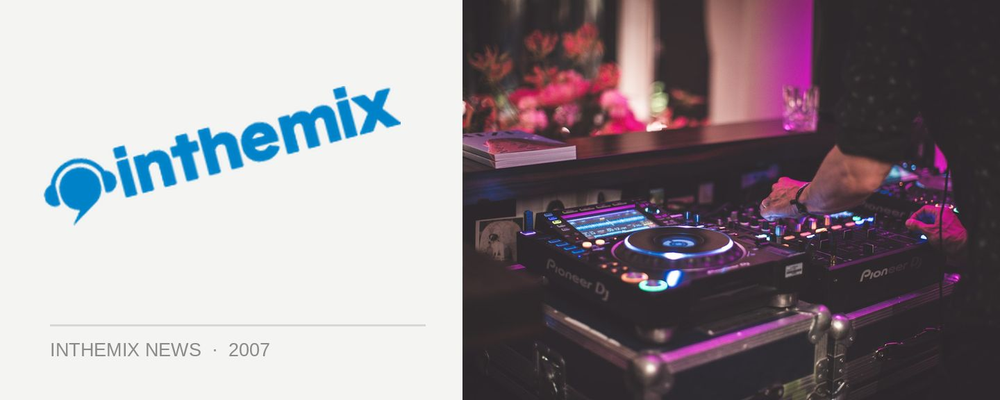

Transmission returns to the Magic City in May
Sydney’s biggest and best over-18s rave returns to the State Sports Centre for another round this year, with organisers promising the biggest, loudest, brightest and best Transmission ever. An announcement has yet to be made as to who will be featuring on the main trance stage, but Transmission cheekily promises its fans that they won’t be disappointed.
The first Transmission party was over 10 years ago with less than 1000 punters, and this year is expanding to a massive 7,000 people capacity. For the first time there will be a new house arena with a dance floor capacity of 2000 people. Transmission has also been known since its inception for pushing the production and technology to the limits, and this year’s Magic City promises to live up to this legacy.
Something else to look out for at the party is the DJ competition presented by inthemix – the winner will play a set on the main trance stage, with another lucky up-and-comer also playing the house stage. If you think you have what it takes to win, enter at www.transmission.net.au or to check out the competition head down to The Temple every second Sunday at Vbar, with the competition kicking off 11th February.
Transmission Magic City is locked and loaded for the States Sports Centre on Saturday 26th May, stay tuned to ITM for more details as they come to hand and check out coverage on the festival page HERE.